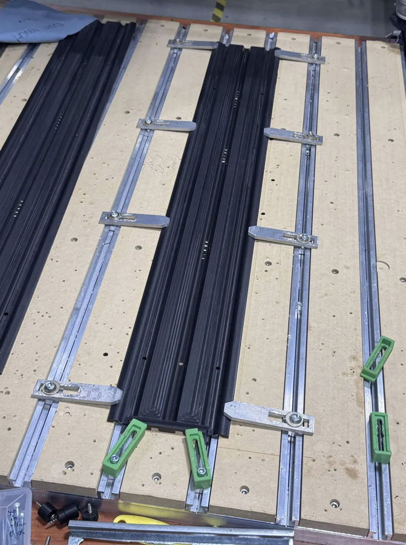
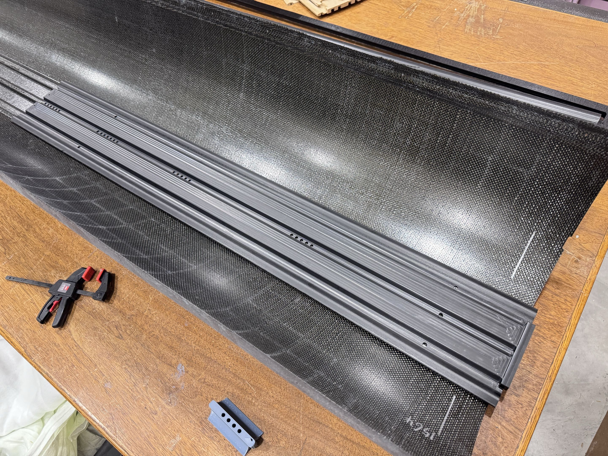
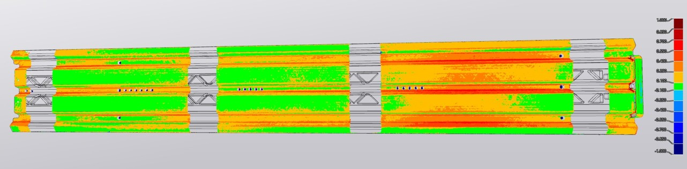

Precision CNC Machining of ITST Polymer Tracks
Iterative Process Development, Workholding, Datum Control, and Dimensional Validation
- CNC machining
- CAM toolpaths
- Workholding development
- Datum control
- Dial-indicator inspection
I was responsible for developing machining procedures for complex, double-sided acetal track components used in the CERN CMS Inner Tracker Support Tube assembly. Each part required multiple machining operations, deliberate workholding, and dimensional inspection. Starting from CAD geometry and manufacturing requirements, I refined the process through machining trials and measured results.

Material and manufacturing strategy
Acetal copolymer was selected after considering machinability, dimensional control, bonding considerations, and material cost relative to UHMW and glass-filled alternatives. Because the component geometry required machining both sides of long stock sections, fixturing and datum transfer were central process considerations.
My initial approach used a CNC router with multiple machining setups. Locating holes and pins supported repositioning between operations, while the outer profile was retained until later in the sequence to preserve workholding options. This established a practical starting process while keeping the long stock supported during machining.
Initial dimensional errors
Early machining trials showed thickness deviations of approximately 0.25–0.4 mm in measured regions, along with hole and groove dimensional errors. These measurements pointed to a process problem broader than toolpath geometry alone.
I suspected that clamping naturally bowed stock was deforming the workpiece and changing the effective machining surface. In other words, the shape of the material while constrained could differ from its released geometry. To investigate, I introduced dial-indicator measurements during stock preparation and clamping adjustment so I could monitor displacement while tightening the fixtures.
Fixturing and workpiece deformation
I revised the workholding procedure to account for the stock’s natural curvature, limit additional clamping-induced deformation, and establish a more consistent reference surface. Rather than treating the measured errors as a cutter-compensation problem, I considered how restraint and part shape influenced the material presented to the tool.
One subsequent machining iteration achieved overall flatness within the 0.25 mm target. Local geometric deviations remained, so this result supported the revised surfacing approach but did not establish that all part dimensions met specification.
CAM strategy and surface finish
The curved geometry required selection and sequencing of adaptive clearing, 3D contouring, parallel finishing, and ball-end milling operations. I investigated how roughing stepover, residual stock, and finishing passes affected the resulting surface. Changes to roughing and finishing produced visibly improved curved-surface quality in later trials.
Some residual deviations initially suggested insufficient material removal or tool wear. Subsequent tests made datum mismatch—particularly after flipping the part—a more plausible contributor to certain errors. This was an evolving diagnosis, not a single conclusively proven root cause. The changing evidence reinforced the need to examine toolpath, workpiece restraint, and references together.

Datum control and alignment
Two-sided machining made it difficult to preserve geometric references after flipping and refixturing. I tested revised Z-zero approaches, including referencing the spoilboard surface, and used locating holes to improve alignment between setups. Later trials showed improved part alignment and more consistent machining depths.
I also observed limitations in relying on MDF as a reference surface over extended machining periods. An HDPE spoilboard was identified as a potential improvement, rather than a change with already verified performance. Reference stability remained part of the process-development work.
Repeatable fixture design
Based on the preceding trials, I developed a fixture concept with axial locating pins and central fastening to address stock bowing and support consistent repositioning. The design was intended to accommodate multiple track variants while maintaining a consistent machining datum.
This was a process-development concept; it should not be interpreted as a fully production-qualified fixture. A scan visualization from the broader dimensional-analysis work is included for technical context only, not as evidence of a machining tolerance or a controlled before-and-after result.

Results and engineering lessons
The observations below came from different machining iterations and inspection contexts. They are not a controlled before-and-after comparison of identical measurements.
| Observation | Engineering interpretation |
|---|---|
| Initial thickness errors | Approximately 0.25–0.4 mm in measured regions. |
| Improved machining trial | Overall flatness was within the 0.25 mm target; other local deviations remained. |
| Later machining trials | Improved alignment and curved-surface finish; no verified universal tolerance figure. |
| Revised process | Locating-hole alignment and improved Z-zero consistency were incorporated. |
| Further improvement identified | A more stable spoilboard and dedicated fixturing were identified as potential improvements. |
Process, not just toolpath
The key engineering lesson was that machining accuracy depended on the complete manufacturing system: stock geometry, fixturing, machine behavior, CAM strategy, reference datums, and inspection. The process improved through repeated measurement, hypothesis testing, and corrective action—not toolpath changes alone. The most useful next steps are continued datum and fixture control, paired dimensional checks across operations, and a more stable reference surface.